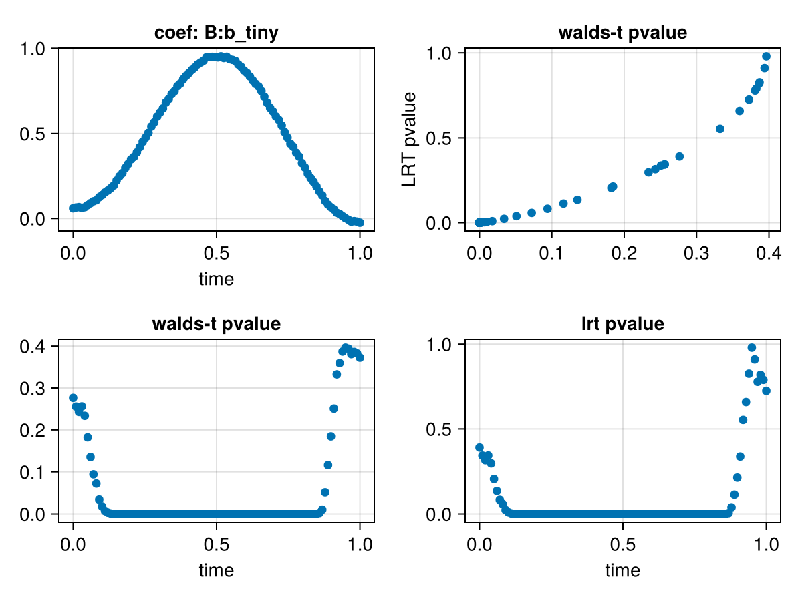

<!DOCTYPE html>
<html lang="en"><head><meta charset="UTF-8"/><meta name="viewport" content="width=device-width, initial-scale=1.0"/><title>P-values for mixedModels · Unfold.jl Timeseries Analysis &amp; Deconvolution</title><meta name="title" content="P-values for mixedModels · Unfold.jl Timeseries Analysis &amp; Deconvolution"/><meta property="og:title" content="P-values for mixedModels · Unfold.jl Timeseries Analysis &amp; Deconvolution"/><meta property="twitter:title" content="P-values for mixedModels · Unfold.jl Timeseries Analysis &amp; Deconvolution"/><meta name="description" content="Documentation for Unfold.jl Timeseries Analysis &amp; Deconvolution."/><meta property="og:description" content="Documentation for Unfold.jl Timeseries Analysis &amp; Deconvolution."/><meta property="twitter:description" content="Documentation for Unfold.jl Timeseries Analysis &amp; Deconvolution."/><script data-outdated-warner src="../../assets/warner.js"></script><link href="https://cdnjs.cloudflare.com/ajax/libs/lato-font/3.0.0/css/lato-font.min.css" rel="stylesheet" type="text/css"/><link href="https://cdnjs.cloudflare.com/ajax/libs/juliamono/0.050/juliamono.min.css" rel="stylesheet" type="text/css"/><link href="https://cdnjs.cloudflare.com/ajax/libs/font-awesome/6.4.2/css/fontawesome.min.css" rel="stylesheet" type="text/css"/><link href="https://cdnjs.cloudflare.com/ajax/libs/font-awesome/6.4.2/css/solid.min.css" rel="stylesheet" type="text/css"/><link href="https://cdnjs.cloudflare.com/ajax/libs/font-awesome/6.4.2/css/brands.min.css" rel="stylesheet" type="text/css"/><link href="https://cdnjs.cloudflare.com/ajax/libs/KaTeX/0.16.8/katex.min.css" rel="stylesheet" type="text/css"/><script>documenterBaseURL="../.."</script><script src="https://cdnjs.cloudflare.com/ajax/libs/require.js/2.3.6/require.min.js" data-main="../../assets/documenter.js"></script><script src="../../search_index.js"></script><script src="../../siteinfo.js"></script><script src="../../../versions.js"></script><link class="docs-theme-link" rel="stylesheet" type="text/css" href="../../assets/themes/catppuccin-mocha.css" data-theme-name="catppuccin-mocha"/><link class="docs-theme-link" rel="stylesheet" type="text/css" href="../../assets/themes/catppuccin-macchiato.css" data-theme-name="catppuccin-macchiato"/><link class="docs-theme-link" rel="stylesheet" type="text/css" href="../../assets/themes/catppuccin-frappe.css" data-theme-name="catppuccin-frappe"/><link class="docs-theme-link" rel="stylesheet" type="text/css" href="../../assets/themes/catppuccin-latte.css" data-theme-name="catppuccin-latte"/><link class="docs-theme-link" rel="stylesheet" type="text/css" href="../../assets/themes/documenter-dark.css" data-theme-name="documenter-dark" data-theme-primary-dark/><link class="docs-theme-link" rel="stylesheet" type="text/css" href="../../assets/themes/documenter-light.css" data-theme-name="documenter-light" data-theme-primary/><script src="../../assets/themeswap.js"></script></head><body><div id="documenter"><nav class="docs-sidebar"><div class="docs-package-name"><span class="docs-autofit"><a href="../../">Unfold.jl Timeseries Analysis &amp; Deconvolution</a></span></div><button class="docs-search-query input is-rounded is-small is-clickable my-2 mx-auto py-1 px-2" id="documenter-search-query">Search docs (Ctrl + /)</button><ul class="docs-menu"><li><a class="tocitem" href="../../">Unfold Documentation</a></li><li><a class="tocitem" href="../../installation/">Installing Julia + Unfold.jl</a></li><li><span class="tocitem">Tutorials</span><ul><li><a class="tocitem" href="../../tutorials/lm_mu/">Mass univariate LM</a></li><li><a class="tocitem" href="../../tutorials/lm_overlap/">LM overlap correction</a></li><li><a class="tocitem" href="../../tutorials/lmm_mu/">Mass univariate Mixed Model</a></li><li><a class="tocitem" href="../../tutorials/lmm_overlap/">LMM + overlap correction</a></li></ul></li><li><span class="tocitem">HowTo</span><ul><li><a class="tocitem" href="../multiple_events/">Overlap: Multiple events</a></li><li><a class="tocitem" href="../pymne/">Import EEG with 🐍 PyMNE.jl</a></li><li><a class="tocitem" href="../standarderrors/">Standard errors</a></li><li><a class="tocitem" href="../custom_solvers/">Alternative Solvers (Robust, GPU, B2B)</a></li><li><a class="tocitem" href="../../generated/HowTo/juliacall_unfold/">🐍 Calling Unfold.jl directly from Python</a></li><li class="is-active"><a class="tocitem" href>P-values for mixedModels</a><ul class="internal"><li><a class="tocitem" href="#lmm_pvalues"><span>How To get P-Values for Mass-Univariate LMM</span></a></li><li><a class="tocitem" href="#Likelihood-ratio"><span>Likelihood ratio</span></a></li><li><a class="tocitem" href="#Walds-T-Test"><span>Walds T-Test</span></a></li><li><a class="tocitem" href="#Comparison-of-methods"><span>Comparison of methods</span></a></li></ul></li><li><a class="tocitem" href="../../generated/HowTo/effects/">Marginal effects (focus on non-linear predictors)</a></li><li><a class="tocitem" href="../../generated/HowTo/unfold_io/">Save and load Unfold models</a></li><li><a class="tocitem" href="../../generated/HowTo/contrasts/">Change contrasts / coding schema</a></li></ul></li><li><span class="tocitem">Explanations</span><ul><li><a class="tocitem" href="../../explanations/basisfunctions/">About basisfunctions</a></li><li><a class="tocitem" href="../../generated/explanations/nonlinear_effects/">Non-Linear effects</a></li><li><a class="tocitem" href="../../generated/explanations/window_length/">Window Length Effect</a></li><li><a class="tocitem" href="../../generated/explanations/predict/">Predictions</a></li></ul></li><li><span class="tocitem">Reference</span><ul><li><a class="tocitem" href="../../references/extensions/">Overview of package extensions</a></li><li><a class="tocitem" href="../../explanations/development/">Development environment</a></li><li><a class="tocitem" href="../../references/types/">API: Types</a></li><li><a class="tocitem" href="../../references/functions/">API: Functions</a></li></ul></li></ul><div class="docs-version-selector field has-addons"><div class="control"><span class="docs-label button is-static is-size-7">Version</span></div><div class="docs-selector control is-expanded"><div class="select is-fullwidth is-size-7"><select id="documenter-version-selector"></select></div></div></div></nav><div class="docs-main"><header class="docs-navbar"><a class="docs-sidebar-button docs-navbar-link fa-solid fa-bars is-hidden-desktop" id="documenter-sidebar-button" href="#"></a><nav class="breadcrumb"><ul class="is-hidden-mobile"><li><a class="is-disabled">HowTo</a></li><li class="is-active"><a href>P-values for mixedModels</a></li></ul><ul class="is-hidden-tablet"><li class="is-active"><a href>P-values for mixedModels</a></li></ul></nav><div class="docs-right"><a class="docs-navbar-link" href="https://github.com/unfoldtoolbox/Unfold.jl" title="View the repository on GitHub"><span class="docs-icon fa-brands"></span><span class="docs-label is-hidden-touch">GitHub</span></a><a class="docs-navbar-link" href="https://github.com/unfoldtoolbox/Unfold.jl/blob/main/docs/src/HowTo/lmm_pvalues.md" title="Edit source on GitHub"><span class="docs-icon fa-solid"></span></a><a class="docs-settings-button docs-navbar-link fa-solid fa-gear" id="documenter-settings-button" href="#" title="Settings"></a><a class="docs-article-toggle-button fa-solid fa-chevron-up" id="documenter-article-toggle-button" href="javascript:;" title="Collapse all docstrings"></a></div></header><article class="content" id="documenter-page"><h2 id="lmm_pvalues"><a class="docs-heading-anchor" href="#lmm_pvalues">How To get P-Values for Mass-Univariate LMM</a><a id="lmm_pvalues-1"></a><a class="docs-heading-anchor-permalink" href="#lmm_pvalues" title="Permalink"></a></h2><p>There are currently two ways to obtain p-values for LMMs: Wald&#39;s t-test and likelihood ratio tests (mass univariate only).</p><h4 id="Setup"><a class="docs-heading-anchor" href="#Setup">Setup</a><a id="Setup-1"></a><a class="docs-heading-anchor-permalink" href="#Setup" title="Permalink"></a></h4><pre><code class="language-julia hljs">using MixedModels, Unfold # we require to load MixedModels to load the PackageExtension
using DataFrames
using UnfoldSim
using CairoMakie
data_epoch, evts =
    UnfoldSim.predef_2x2(; n_items = 52, n_subjects = 40, return_epoched = true)
data_epoch = reshape(data_epoch, size(data_epoch, 1), :) #
times = range(0, 1, length = size(data_epoch, 1))</code></pre><pre class="documenter-example-output"><code class="nohighlight hljs ansi">0.0:0.010101010101010102:1.0</code></pre><h4 id="Define-f0-and-f1-and-fit!"><a class="docs-heading-anchor" href="#Define-f0-and-f1-and-fit!">Define f0 &amp; f1 and fit!</a><a id="Define-f0-and-f1-and-fit!-1"></a><a class="docs-heading-anchor-permalink" href="#Define-f0-and-f1-and-fit!" title="Permalink"></a></h4><pre><code class="language-julia hljs">f0 = @formula 0 ~ 1 + A + (1 + A | subject);
f1 = @formula 0 ~ 1 + A + B + (1 + A | subject); # could also differ in random effects

m0 = fit(UnfoldModel,[Any=&gt;(f0,times)],evts,data_epoch);
m1 = fit(UnfoldModel,[Any=&gt;(f1,times)],evts,data_epoch);</code></pre><h2 id="Likelihood-ratio"><a class="docs-heading-anchor" href="#Likelihood-ratio">Likelihood ratio</a><a id="Likelihood-ratio-1"></a><a class="docs-heading-anchor-permalink" href="#Likelihood-ratio" title="Permalink"></a></h2><pre><code class="language-julia hljs">uf_lrt = likelihoodratiotest(m0, m1)
uf_lrt[1]</code></pre><table><tr><th align="left"></th><th align="right">model-dof</th><th align="right">deviance</th><th align="right">χ²</th><th align="right">χ²-dof</th><th align="left">P&#40;&gt;χ²&#41;</th></tr><tr><td align="left">&#91;38;2;144;202;249m1&#91;39m &#91;38;2;239;83;80m&#43;&#91;39m A &#91;38;2;239;83;80m&#43;&#91;39m &#40;&#91;38;2;144;202;249m1&#91;39m &#91;38;2;239;83;80m&#43;&#91;39m A &#91;38;2;239;83;80m|&#91;39m subject&#41;</td><td align="right">6</td><td align="right">6404</td><td align="right"> </td><td align="right"> </td><td align="left"> </td></tr><tr><td align="left">&#91;38;2;144;202;249m1&#91;39m &#91;38;2;239;83;80m&#43;&#91;39m A &#91;38;2;239;83;80m&#43;&#91;39m B &#91;38;2;239;83;80m&#43;&#91;39m &#40;&#91;38;2;144;202;249m1&#91;39m &#91;38;2;239;83;80m&#43;&#91;39m A &#91;38;2;239;83;80m|&#91;39m subject&#41;</td><td align="right">7</td><td align="right">6403</td><td align="right">1</td><td align="right">1</td><td align="left">0.3905</td></tr></table>
<p>As you can see, we have some likelihood ratio outcomes, exciting!</p><h4 id="Extract-p-values"><a class="docs-heading-anchor" href="#Extract-p-values">Extract p-values</a><a id="Extract-p-values-1"></a><a class="docs-heading-anchor-permalink" href="#Extract-p-values" title="Permalink"></a></h4><pre><code class="language-julia hljs">pvalues(uf_lrt)</code></pre><pre class="documenter-example-output"><code class="nohighlight hljs ansi">100-element Vector{Vector{Float64}}:
 [0.39049722252065544]
 [0.3429247501956857]
 [0.3155962312563677]
 [0.34350071746311484]
 [0.2969289614490519]
 [0.20505807272063944]
 [0.1346944620685089]
 [0.08216193103815202]
 [0.05773667473785587]
 [0.022738364518859185]
 ⋮
 [0.5532200726406681]
 [0.6585764566537168]
 [0.8258599045036381]
 [0.9793783325628428]
 [0.9099626271420586]
 [0.7778718606979242]
 [0.8187320694459129]
 [0.7892491016925438]
 [0.7246465619220344]</code></pre><p>We have extracted the p-values and now need to make them usable.     The solution can be found in the documentation under <code>?pvalues</code>.</p><pre><code class="language-julia hljs">pvals_lrt = vcat(pvalues(uf_lrt)...)
nchan = 1
ntime = length(times)
reshape(pvals_lrt, ntime, nchan)&#39; # note the last transpose via &#39; !</code></pre><pre class="documenter-example-output"><code class="nohighlight hljs ansi">1×100 adjoint(::Matrix{Float64}) with eltype Float64:
 0.390497  0.342925  0.315596  0.343501  …  0.818732  0.789249  0.724647</code></pre><p>Perfecto, these are the LRT p-values of a model <code>condA</code> vs. <code>condA+condB</code> with same random effect structure.</p><h2 id="Walds-T-Test"><a class="docs-heading-anchor" href="#Walds-T-Test">Walds T-Test</a><a id="Walds-T-Test-1"></a><a class="docs-heading-anchor-permalink" href="#Walds-T-Test" title="Permalink"></a></h2><p>This method is easier to calculate but has limitations in accuracy and scope. It may also be less accurate due to the liberal estimation of degrees of freedom. Testing is limited in this case, as random effects cannot be tested and only single predictors can be used, which may not be appropriate for spline effects. It is important to note that this discussion is beyond the scope of this LMM package. </p><pre><code class="language-julia hljs">res = coeftable(m1)
# only fixed effects: what is not in a ranef group is a fixef.
res = res[isnothing.(res.group), :]
# calculate t-value
res[:, :tvalue] = res.estimate ./ res.stderror</code></pre><pre class="documenter-example-output"><code class="nohighlight hljs ansi">300-element Vector{Float64}:
  4.446708326696426
  4.437580860011641
  4.446435058073349
  4.492672997803976
  4.494599457419684
  4.4880483252027075
  4.439652303422133
  4.45518635490581
  4.623068236549389
  4.663764726700654
  ⋮
  0.5870708293447756
  0.43759939804174963
  0.2172917074185397
  0.025591530320948425
 -0.11195974844949615
 -0.28040792854804225
 -0.22668554132390997
 -0.2646530795209725
 -0.3492299276363734</code></pre><p>We obtained Walds t, but how to translate them to a p-value?</p><p>Determining the necessary degrees of freedom for the t-distribution is a complex issue with much debate surrounding it.  One approach is to use the number of subjects as an upper bound for the p-value (your df will be between <span>$n_{subject}$</span> and <span>$\sum{n_{trials}}$</span>).</p><pre><code class="language-julia hljs">df = length(unique(evts.subject))</code></pre><pre class="documenter-example-output"><code class="nohighlight hljs ansi">40</code></pre><p>Plug it into the t-distribution. </p><pre><code class="language-julia hljs">using Distributions
res.pvalue = pdf.(TDist(df),res.tvalue)</code></pre><pre class="documenter-example-output"><code class="nohighlight hljs ansi">300-element Vector{Float64}:
 0.00010520592926163251
 0.00010817494439425095
 0.00010529365405567558
 9.142141916777313e-5
 9.088393516836884e-5
 9.272440215982806e-5
 0.00010749405443829126
 0.00010251943544603832
 6.122445474960627e-5
 5.398423858898151e-5
 ⋮
 0.33251660178615255
 0.3594809847897533
 0.38698410798874533
 0.39632387743397085
 0.39391857391788004
 0.38081351375847516
 0.38615884540577883
 0.3824900521283194
 0.37247026276880874</code></pre><h2 id="Comparison-of-methods"><a class="docs-heading-anchor" href="#Comparison-of-methods">Comparison of methods</a><a id="Comparison-of-methods-1"></a><a class="docs-heading-anchor-permalink" href="#Comparison-of-methods" title="Permalink"></a></h2><p>Cool! Let&#39;s compare both methods of p-value calculation!</p><pre><code class="language-julia hljs">df = DataFrame(:walds =&gt; res[res.coefname.==&quot;B: b_tiny&quot;, :pvalue], :lrt =&gt; pvals_lrt)
f = Figure()

scatter(f[1,1],times,res[res.coefname .== &quot;B: b_tiny&quot;,:estimate],axis=(;xlabel=&quot;time&quot;,title=&quot;coef: B:b_tiny&quot;))
scatter(f[1,2],df.walds,df.lrt,axis=(;title=&quot;walds-t pvalue&quot;,ylabel=&quot;LRT pvalue&quot;))
scatter(f[2,1],times,df.walds,axis=(;title=&quot;walds-t pvalue&quot;,xlabel=&quot;time&quot;))
scatter(f[2,2],times,df.lrt,axis=(;title=&quot;lrt pvalue&quot;,xlabel=&quot;time&quot;))

f</code></pre><p>Look pretty similar! Note that the Walds-T is typically too liberal (LRT also, but to a lesser exted). Best is to use the forthcoming MixedModelsPermutations.jl or go the route via R and use KenwardRoger (data not yet published)</p></article><nav class="docs-footer"><a class="docs-footer-prevpage" href="../../generated/HowTo/juliacall_unfold/">« 🐍 Calling Unfold.jl directly from Python</a><a class="docs-footer-nextpage" href="../../generated/HowTo/effects/">Marginal effects (focus on non-linear predictors) »</a><div class="flexbox-break"></div><p class="footer-message">Powered by <a href="https://github.com/JuliaDocs/Documenter.jl">Documenter.jl</a> and the <a href="https://julialang.org/">Julia Programming Language</a>.</p></nav></div><div class="modal" id="documenter-settings"><div class="modal-background"></div><div class="modal-card"><header class="modal-card-head"><p class="modal-card-title">Settings</p><button class="delete"></button></header><section class="modal-card-body"><p><label class="label">Theme</label><div class="select"><select id="documenter-themepicker"><option value="auto">Automatic (OS)</option><option value="documenter-light">documenter-light</option><option value="documenter-dark">documenter-dark</option><option value="catppuccin-latte">catppuccin-latte</option><option value="catppuccin-frappe">catppuccin-frappe</option><option value="catppuccin-macchiato">catppuccin-macchiato</option><option value="catppuccin-mocha">catppuccin-mocha</option></select></div></p><hr/><p>This document was generated with <a href="https://github.com/JuliaDocs/Documenter.jl">Documenter.jl</a> version 1.7.0 on <span class="colophon-date" title="Tuesday 15 October 2024 07:44">Tuesday 15 October 2024</span>. Using Julia version 1.11.0.</p></section><footer class="modal-card-foot"></footer></div></div></div></body></html>
